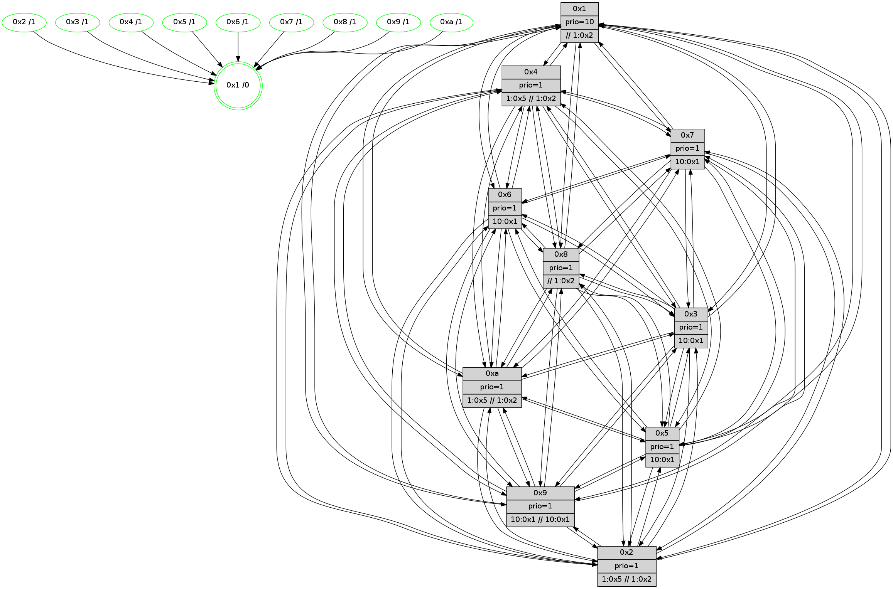

>> << IDX [start] -100 -25 -5 +0 +5 +25 +100 [670.33991909]
 Previous packets
----------------------------------------------------------------------
665.611133 beacon01(faad) #0 coord=01,02,03,04,05,06,07,0a,09,08 cycle=688.0ms assoc
-- color-indic=1 64 91 7f
665.621114 beacon02(faad) #0 coord=01,02,03,04,05,06,07,0a,09,08 cycle=688.0ms assoc 64 02 4e
665.631116 beacon03(faad) #0 coord=01,02,03,04,05,06,07,0a,09,08 cycle=688.0ms assoc 64 78 03
665.641116 beacon04(faad) #0 coord=01,02,03,04,05,06,07,0a,09,08 cycle=688.0ms assoc 64 0f e9
665.651117 beacon05(faad) #0 coord=01,02,03,04,05,06,07,0a,09,08 cycle=688.0ms assoc 64 75 a4
665.661116 beacon06(faad) #0 coord=01,02,03,04,05,06,07,0a,09,08 cycle=688.0ms assoc 64 fb 73
665.671116 beacon07(faad) #0 coord=01,02,03,04,05,06,07,0a,09,08 cycle=688.0ms assoc 64 81 3e
665.681120 beacon0a(faad) #0 coord=01,02,03,04,05,06,07,0a,09,08 cycle=688.0ms assoc 64 f0 35
665.691122 beacon09(faad) #0 coord=01,02,03,04,05,06,07,0a,09,08 cycle=688.0ms assoc 64 7e e2
665.701122 beacon08(faad) #0 coord=01,02,03,04,05,06,07,0a,09,08 cycle=688.0ms assoc 64 04 af
665.712339 [Hello(4): seq=427 sym=5,7,6,2,3,9,8,10,1 sysInfo= stat=5:15,4,1,6/7:13,11,3,2/6:6,2,4,7/2:6,7,14,6/3:14,2,11,4/9:0,13,0,3/8:7,1,2,7/10:4,2,3,6/1:2,7,1,1]
665.715857 [Color(10) seq=85 @0:0 prio=1 >1.@5 >>1.@2,1.@3,1.@4]
665.724802 [Hello(1): seq=336 sym=4,2,9,5,10,3,8,6,7 sysInfo=coloring-mode-on,ColoringModeRequestCalled stat=4:10,8,3,0/2:2,7,8,8/9:7,11,2,0/5:0,1,0,0/10:2,13,10,7/3:4,9,13,9/8:8,8,13,6/6:5,7,8,6/7:10,10,14,7]
665.729068 [Hello(6): seq=427 sym=2,3,5,4,7,9,8,10,1 sysInfo= stat=2:0,3,9,6/3:3,10,4,6/5:12,0,1,8/4:5,7,2,0/7:0,8,5,1/9:0,1,3,6/8:11,4,3,5/10:0,4,9,6/1:5,7,14,1]
665.736224 [Color(8) seq=107 @0:0 prio=1 >>1.@2,1.@3,1.@4]
----------------------------------------------------------------------
666.399262 beacon01(faad) #0 coord=01,02,03,04,05,06,07,0a,09,08 cycle=688.0ms assoc
-- color-indic=1 64 2d 7a
666.409244 beacon02(faad) #0 coord=01,02,03,04,05,06,07,0a,09,08 cycle=688.0ms assoc 64 be 4b
666.419244 beacon03(faad) #0 coord=01,02,03,04,05,06,07,0a,09,08 cycle=688.0ms assoc 64 c4 06
666.429245 beacon04(faad) #0 coord=01,02,03,04,05,06,07,0a,09,08 cycle=688.0ms assoc 64 b3 ec
666.439244 beacon05(faad) #0 coord=01,02,03,04,05,06,07,0a,09,08 cycle=688.0ms assoc 64 c9 a1
666.449246 beacon06(faad) #0 coord=01,02,03,04,05,06,07,0a,09,08 cycle=688.0ms assoc 64 47 76
666.459246 beacon07(faad) #0 coord=01,02,03,04,05,06,07,0a,09,08 cycle=688.0ms assoc 64 3d 3b
666.469250 beacon0a(faad) #0 coord=01,02,03,04,05,06,07,0a,09,08 cycle=688.0ms assoc 64 4c 30
666.479251 beacon09(faad) #0 coord=01,02,03,04,05,06,07,0a,09,08 cycle=688.0ms assoc 64 c2 e7
666.489251 beacon08(faad) #0 coord=01,02,03,04,05,06,07,0a,09,08 cycle=688.0ms assoc 64 b8 aa
666.500791 [Hello(10): seq=360 sym=6,2,3,8,9,5,7,4,1 sysInfo= stat=6:1,8,4,2/2:14,5,9,1/3:5,9,8,3/8:15,9,15,6/9:2,6,13,4/5:4,14,14,7/7:10,5,0,2/4:15,10,10,6/1:14,12,1,1]
666.503563 [Color(3) seq=92 @0:0 prio=1 >10.@1,1.@2,1.@5,1.@8]
666.505196 [Color(6) seq=97 @0:0 prio=1 >10.@1,1.@2,1.@3,1.@5]
666.507010 [Hello(8): seq=371 sym=5,2,3,4,7,6,9,10,1 sysInfo=hasWarning,coloring-mode-on,ColoringModeIndicationCalled stat=5:13,14,2,6/2:4,5,9,1/3:15,13,0,8/4:6,7,3,6/7:0,6,3,5/6:9,11,15,7/9:3,6,3,5/10:13,9,2,6/1:1,0,2,0]
666.510038 [Hello(2): seq=424 sym=4,7,6,3,9,8,10,1 asym=5 sysInfo=hasWarning stat=4:15,7,0,4/7:1,8,5,3/6:6,2,1,5/3:6,3,13,1/9:4,0,14,1/8:13,13,11,4/10:13,11,14,4/1:12,4,12,1/5:0,1,0,0]
666.513248 [Color(2) seq=73 @0:0 prio=1 >1.@5 >>1.@2,1.@3,1.@4]
666.517036 [Color(1) seq=108 @0:0 prio=10 >>1.@2,1.@3,1.@4]
666.518563 [Color(4) seq=71 @0:0 prio=1 >1.@5 >>1.@2,1.@3,1.@4]
666.520282 [Hello(9): seq=371 sym=5,2,3,4,7,6,8,10,1 sysInfo=hasWarning stat=5:12,13,15,8/2:14,5,5,5/3:4,2,13,6/4:6,14,15,5/7:0,4,6,3/6:9,10,0,5/8:7,8,7,2/10:5,1,3,7/1:11,7,3,1]
666.523555 [Color(7) seq=80 @0:0 prio=1 >10.@1,1.@2,1.@3,1.@5]
666.525173 [Hello(5): seq=428 sym=7,6,4,3,1,9,8,10,2 sysInfo= stat=7:11,13,5,3/6:12,0,3,6/4:3,6,14,5/3:15,3,12,4/1:14,12,0,1/9:7,7,2,3/8:8,4,12,4/10:8,5,2,5/2:0,1,0,0]
666.528043 [Color(9) seq=76 @0:0 prio=1 >10.@1,1.@2,1.@3,1.@5 >>10.@1,1.@2,1.@3]
666.533909 [Color(5) seq=81 @0:0 prio=1 >10.@1,1.@2,1.@3,1.@4]
----------------------------------------------------------------------
667.187393 beacon01(faad) #0 coord=01,02,03,04,05,06,07,0a,09,08 cycle=688.0ms assoc
-- color-indic=1 64 a8 c4
667.197375 beacon02(faad) #0 coord=01,02,03,04,05,06,07,0a,09,08 cycle=688.0ms assoc 64 3b f5
667.207376 beacon03(faad) #0 coord=01,02,03,04,05,06,07,0a,09,08 cycle=688.0ms assoc 64 41 b8
667.217374 beacon04(faad) #0 coord=01,02,03,04,05,06,07,0a,09,08 cycle=688.0ms assoc 64 36 52
667.227376 beacon05(faad) #0 coord=01,02,03,04,05,06,07,0a,09,08 cycle=688.0ms assoc 64 4c 1f
667.237374 beacon06(faad) #0 coord=01,02,03,04,05,06,07,0a,09,08 cycle=688.0ms assoc 64 c2 c8
667.247376 beacon07(faad) #0 coord=01,02,03,04,05,06,07,0a,09,08 cycle=688.0ms assoc 64 b8 85
667.257380 beacon0a(faad) #0 coord=01,02,03,04,05,06,07,0a,09,08 cycle=688.0ms assoc 64 c9 8e
667.267381 beacon09(faad) #0 coord=01,02,03,04,05,06,07,0a,09,08 cycle=688.0ms assoc 64 47 59
667.277383 beacon08(faad) #0 coord=01,02,03,04,05,06,07,0a,09,08 cycle=688.0ms assoc 64 3d 14
667.296012 [STC(1) #0.54 tree-change,inconsistent-stability,stable,to-color d=0]
667.299434 [Color(10) seq=86 @0:0 prio=1 >1.@5 >>1.@2,1.@3,1.@4]
667.302980 [Color(8) seq=108 @0:0 prio=1 >>1.@2,1.@3,1.@4]
----------------------------------------------------------------------
667.975525 beacon01(faad) #0 coord=01,02,03,04,05,06,07,0a,09,08 cycle=688.0ms assoc
-- color-indic=1 64 14 c1
667.985508 beacon02(faad) #0 coord=01,02,03,04,05,06,07,0a,09,08 cycle=688.0ms assoc 64 87 f0
667.995507 beacon03(faad) #0 coord=01,02,03,04,05,06,07,0a,09,08 cycle=688.0ms assoc 64 fd bd
668.005508 beacon04(faad) #0 coord=01,02,03,04,05,06,07,0a,09,08 cycle=688.0ms assoc 64 8a 57
668.015507 beacon05(faad) #0 coord=01,02,03,04,05,06,07,0a,09,08 cycle=688.0ms assoc 64 f0 1a
668.025509 beacon06(faad) #0 coord=01,02,03,04,05,06,07,0a,09,08 cycle=688.0ms assoc 64 7e cd
668.035509 beacon07(faad) #0 coord=01,02,03,04,05,06,07,0a,09,08 cycle=688.0ms assoc 64 04 80
668.045513 beacon0a(faad) #0 coord=01,02,03,04,05,06,07,0a,09,08 cycle=688.0ms assoc 64 75 8b
668.055513 beacon09(faad) #0 coord=01,02,03,04,05,06,07,0a,09,08 cycle=688.0ms assoc 64 fb 5c
668.065513 beacon08(faad) #0 coord=01,02,03,04,05,06,07,0a,09,08 cycle=688.0ms assoc 64 81 11
668.077379 [Hello(10): seq=361 sym=6,2,3,8,9,5,7,4,1 sysInfo= stat=6:1,9,4,2/2:15,6,9,1/3:5,10,8,3/8:0,10,15,6/9:3,7,13,4/5:5,15,14,7/7:11,6,0,2/4:15,11,10,6/1:14,13,1,1]
668.081059 [Color(1) seq=109 @0:0 prio=10 >>1.@2,1.@3,1.@4]
668.082802 [STC(7)->1 #0.54 tree-change,inconsistent-stability,stable,to-color d=1]
668.084067 [STC(3)->1 #0.54 tree-change,inconsistent-stability,stable,to-color d=1]
668.085334 [Hello(8): seq=372 sym=5,2,3,4,7,6,9,10,1 sysInfo=hasWarning,coloring-mode-on,ColoringModeIndicationCalled stat=5:14,15,2,6/2:5,6,9,1/3:15,13,0,8/4:6,8,3,6/7:0,7,3,5/6:10,11,15,7/9:4,7,3,5/10:13,9,2,6/1:1,1,2,0]
668.087767 [Color(7) seq=81 @0:0 prio=1 >10.@1,1.@2,1.@3,1.@5]
668.089877 [Hello(5): seq=429 sym=7,6,4,3,1,9,8,10,2 sysInfo= stat=7:12,13,5,3/6:12,0,3,6/4:4,6,14,5/3:15,3,12,4/1:14,12,1,1/9:7,7,2,3/8:8,5,12,4/10:9,6,2,5/2:0,1,0,0]
668.092370 [Hello(9): seq=372 sym=5,2,3,4,7,6,8,10,1 sysInfo=hasWarning stat=5:12,14,15,8/2:14,5,5,5/3:4,3,13,6/4:6,14,15,5/7:0,4,6,3/6:9,10,0,5/8:7,9,7,2/10:6,2,3,7/1:11,7,4,1]
668.095063 [STC(5)->1 #0.54 tree-change,inconsistent-stability,stable,to-color d=1]
668.096487 [STC(9)->1 #0.54 tree-change,inconsistent-stability,stable,to-color d=1]
668.098045 [Hello(2): seq=425 sym=4,5,7,6,3,9,8,10,1 sysInfo=hasWarning stat=4:0,8,0,4/5:1,2,0,0/7:2,9,5,3/6:6,2,1,5/3:6,4,13,1/9:5,1,14,1/8:13,14,11,4/10:14,12,14,4/1:12,5,13,1]
668.100484 [STC(6)->1 #0.54 tree-change,inconsistent-stability,stable,to-color d=1]
668.101771 [Color(9) seq=77 @0:0 prio=1 >10.@1,1.@2,1.@3,1.@5 >>10.@1,1.@2,1.@3]
668.104030 [Color(6) seq=98 @0:0 prio=1 >10.@1,1.@2,1.@3,1.@5]
668.107328 [Color(3) seq=93 @0:0 prio=1 >10.@1,1.@2,1.@5,1.@8]
668.109052 [STC(2)->1 #0.54 tree-change,inconsistent-stability,stable,to-color d=1]
668.112619 [Color(2) seq=74 @0:0 prio=1 >1.@5 >>1.@2,1.@3,1.@4]
668.115526 [STC(4)->1 #0.54 tree-change,inconsistent-stability,stable,to-color d=1]
668.117803 [Color(4) seq=72 @0:0 prio=1 >1.@5 >>1.@2,1.@3,1.@4]
668.120020 [Color(5) seq=82 @0:0 prio=1 >10.@1,1.@2,1.@3,1.@4]
----------------------------------------------------------------------
668.763657 beacon01(faad) #0 coord=01,02,03,04,05,06,07,0a,09,08 cycle=688.0ms assoc
-- color-indic=1 64 d0 cf
668.773640 beacon02(faad) #0 coord=01,02,03,04,05,06,07,0a,09,08 cycle=688.0ms assoc 64 43 fe
668.783639 beacon03(faad) #0 coord=01,02,03,04,05,06,07,0a,09,08 cycle=688.0ms assoc 64 39 b3
668.793640 beacon04(faad) #0 coord=01,02,03,04,05,06,07,0a,09,08 cycle=688.0ms assoc 64 4e 59
668.803641 beacon05(faad) #0 coord=01,02,03,04,05,06,07,0a,09,08 cycle=688.0ms assoc 64 34 14
668.813640 beacon06(faad) #0 coord=01,02,03,04,05,06,07,0a,09,08 cycle=688.0ms assoc 64 ba c3
668.823640 beacon07(faad) #0 coord=01,02,03,04,05,06,07,0a,09,08 cycle=688.0ms assoc 64 c0 8e
668.833644 beacon0a(faad) #0 coord=01,02,03,04,05,06,07,0a,09,08 cycle=688.0ms assoc 64 b1 85
668.843645 beacon09(faad) #0 coord=01,02,03,04,05,06,07,0a,09,08 cycle=688.0ms assoc 64 3f 52
668.853644 beacon08(faad) #0 coord=01,02,03,04,05,06,07,0a,09,08 cycle=688.0ms assoc 64 45 1f
668.873319 [Color(10) seq=87 @0:0 prio=1 >1.@5 >>1.@2,1.@3,1.@4]
668.877019 [Hello(1): seq=338 sym=4,2,9,5,10,3,8,6,7 sysInfo=coloring-mode-on,ColoringModeRequestCalled stat=4:10,10,4,0/2:3,8,9,8/9:9,13,3,0/5:2,3,1,0/10:4,14,10,7/3:4,10,14,9/8:9,10,13,6/6:6,8,8,6/7:10,11,15,7]
----------------------------------------------------------------------
669.551786 beacon01(faad) #0 coord=01,02,03,04,05,06,07,0a,09,08 cycle=688.0ms assoc
-- color-indic=1 64 6c ca
669.561768 beacon02(faad) #0 coord=01,02,03,04,05,06,07,0a,09,08 cycle=688.0ms assoc 64 ff fb
669.571768 beacon03(faad) #0 coord=01,02,03,04,05,06,07,0a,09,08 cycle=688.0ms assoc 64 85 b6
669.581770 beacon04(faad) #0 coord=01,02,03,04,05,06,07,0a,09,08 cycle=688.0ms assoc 64 f2 5c
669.591770 beacon05(faad) #0 coord=01,02,03,04,05,06,07,0a,09,08 cycle=688.0ms assoc 64 88 11
669.601768 beacon06(faad) #0 coord=01,02,03,04,05,06,07,0a,09,08 cycle=688.0ms assoc 64 06 c6
669.611770 beacon07(faad) #0 coord=01,02,03,04,05,06,07,0a,09,08 cycle=688.0ms assoc 64 7c 8b
669.621775 beacon0a(faad) #0 coord=01,02,03,04,05,06,07,0a,09,08 cycle=688.0ms assoc 64 0d 80
669.631774 beacon09(faad) #0 coord=01,02,03,04,05,06,07,0a,09,08 cycle=688.0ms assoc 64 83 57
669.641774 beacon08(faad) #0 coord=01,02,03,04,05,06,07,0a,09,08 cycle=688.0ms assoc 64 f9 1a
669.654585 [Hello(10): seq=362 sym=6,2,3,8,9,5,7,4,1 sysInfo= stat=6:1,10,4,2/2:0,7,10,1/3:5,11,9,3/8:1,10,15,6/9:4,8,14,4/5:6,0,15,7/7:12,6,1,2/4:15,12,11,6/1:15,14,1,1]
669.657076 [Color(3) seq=94 @0:0 prio=1 >10.@1,1.@2,1.@5,1.@8]
669.658739 [Color(6) seq=99 @0:0 prio=1 >10.@1,1.@2,1.@3,1.@5]
669.660648 [Color(7) seq=82 @0:0 prio=1 >10.@1,1.@2,1.@3,1.@5]
669.665246 [Color(1) seq=110 @0:0 prio=10 >>1.@2,1.@3,1.@4]
669.667124 [Color(9) seq=78 @0:0 prio=1 >10.@1,1.@2,1.@3,1.@5 >>10.@1,1.@2,1.@3]
669.674672 [Hello(5): seq=430 sym=7,6,4,3,1,9,8,10,2 sysInfo= stat=7:13,13,5,3/6:12,0,3,6/4:5,6,14,5/3:15,3,12,4/1:15,12,1,1/9:7,7,2,3/8:8,5,12,4/10:10,7,2,5/2:0,1,0,0]
669.677500 [Color(5) seq=83 @0:0 prio=1 >10.@1,1.@2,1.@3,1.@4]
669.681724 [Hello(2): seq=426 sym=4,5,7,6,3,9,8,10,1 sysInfo=hasWarning stat=4:1,9,1,4/5:1,3,0,0/7:3,9,5,3/6:6,2,2,5/3:6,4,13,1/9:5,1,14,1/8:13,14,11,4/10:15,13,14,4/1:13,5,13,1]
669.685805 [Color(2) seq=75 @0:0 prio=1 >1.@5 >>1.@2,1.@3,1.@4]